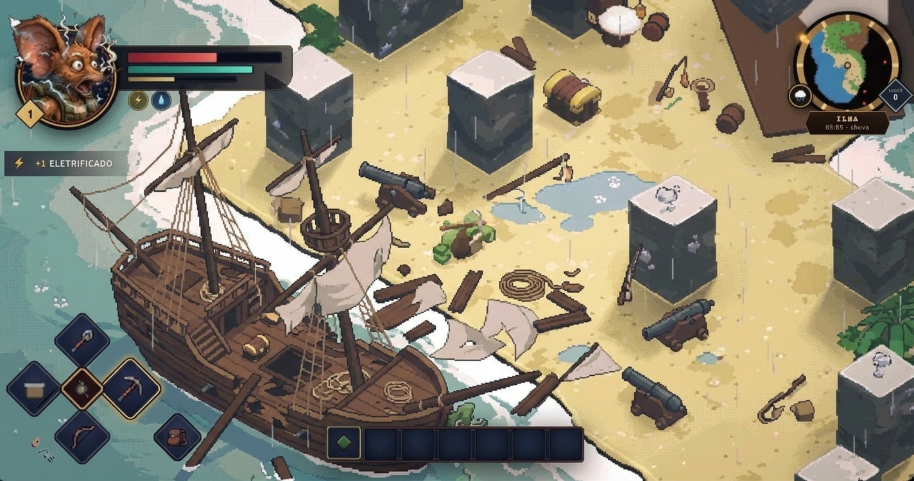

EXPLORE · CONSTRUA · SOBREVIVA
O que o mar devolveu.
Um naufrágio, uma ilha e um mundo de possibilidades pela frente.
Uma luz na escuridão.
O mar nos trouxe até aqui.
A próxima travessia é com a sua tripulação.

Um naufrágio, uma ilha e um mundo de possibilidades pela frente.
O online depende de conexão e da conta do jogo. O launcher não concede acesso ao alpha.